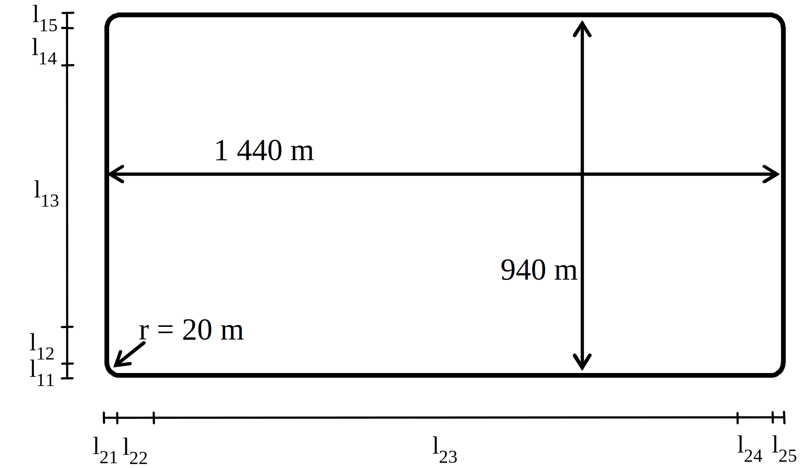
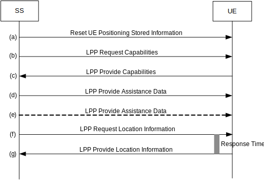
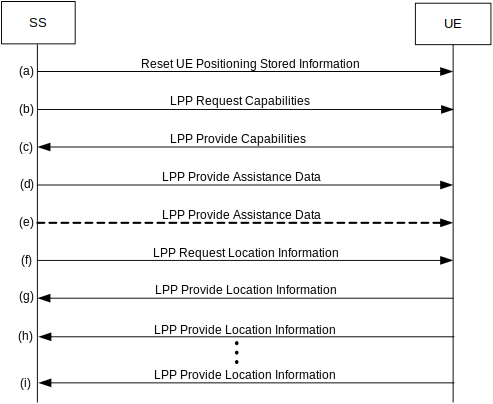

Technical Specification Group Radio Access Network;
NR;
Requirements for support of Assisted Global Navigation Satellite
System (A-GNSS)
(Release 17)
The present document has been developed within the 3rd
Generation Partnership Project (3GPP TM) and may be further
elaborated for the purposes of 3GPP.
The present document has not been subject to any approval process by the
3GPP Organizational Partners and shall not be implemented.
This Specification is provided for future development work within 3GPP
only. The Organizational Partners accept no liability for any use of
this Specification.
Specifications and Reports for implementation of the 3GPP TM
system should be obtained via the 3GPP Organizational Partners'
Publications Offices.
3GPP
Postal address
3GPP support office address
650 Route des Lucioles - Sophia Antipolis
Valbonne - FRANCE
Tel.: +33 4 92 94 42 00 Fax: +33 4 93 65 47 16
Internet
http://www.3gpp.org
Copyright
Notification
No part may be reproduced except as authorized by written
permission.
The copyright and the foregoing restriction extend to reproduction in
all media.
UMTS™ is a Trade Mark of ETSI registered for the benefit of its
members
3GPP™ is a Trade Mark of ETSI registered for the benefit of its
Members and of the 3GPP Organizational Partners
LTE™ is a Trade Mark of ETSI registered for the benefit of its Members
and of the 3GPP Organizational Partners
GSM® and the GSM logo are registered and owned by the GSM
Association
This Technical Specification has been produced by the 3rd Generation
Partnership Project (3GPP).
The contents of the present document are subject to continuing work
within the TSG and may change following formal TSG approval. Should the
TSG modify the contents of the present document, it will be re-released
by the TSG with an identifying change of release date and an increase in
version number as follows:
Version x.y.z
where:
x the first digit:
1 presented to TSG for information;
2 presented to TSG for approval;
3 or greater indicates TSG approved document under change
control.
y the second digit is incremented for all changes of substance, i.e.
technical enhancements, corrections, updates, etc.
z the third digit is incremented when editorial only changes have
been incorporated in the document.
In the present document, modal verbs have the following meanings:
shall indicates a mandatory requirement to do
something
shall not indicates an interdiction (prohibition) to
do something
The constructions "shall" and "shall not" are confined to the context
of normative provisions, and do not appear in Technical Reports.
The constructions "must" and "must not" are not used as substitutes
for "shall" and "shall not". Their use is avoided insofar as possible,
and they are not used in a normative context except in a direct citation
from an external, referenced, non-3GPP document, or so as to maintain
continuity of style when extending or modifying the provisions of such a
referenced document.
should indicates a recommendation to do
something
should not indicates a recommendation not to do
something
may indicates permission to do something
need not indicates permission not to do
something
The construction "may not" is ambiguous and is not used in normative
elements. The unambiguous constructions "might not" or "shall not" are
used instead, depending upon the meaning intended.
can indicates that something is possible
cannot indicates that something is impossible
The constructions "can" and "cannot" are not substitutes for "may"
and "need not".
will indicates that something is certain or expected
to happen as a result of action taken by an agency the behaviour of
which is outside the scope of the present document
will not indicates that something is certain or
expected not to happen as a result of action taken by an agency the
behaviour of which is outside the scope of the present document
might indicates a likelihood that something will
happen as a result of action taken by some agency the behaviour of which
is outside the scope of the present document
might not indicates a likelihood that something will
not happen as a result of action taken by some agency the behaviour of
which is outside the scope of the present document
In addition:
is (or any other verb in the indicative mood)
indicates a statement of fact
is not (or any other negative verb in the indicative
mood) indicates a statement of fact
The constructions "is" and "is not" do not indicate requirements.
1 Scope
The present document establishes the minimum requirements for both UE
based and UE assisted FDD or TDD A-GNSS terminals which have NG-RAN
access via gNB (in SA NR, NR-DC or NE-DC NR operation mode [2]) or via
ng-eNB (in EN-DC operation mode [2]) and which are supporting A-GNSS in
5GS via LPP [3] between UE and LMF as described in TS 38.305 [17].
2 References
The following documents contain provisions which, through reference
in this text, constitute provisions of the present document.
• References are either specific (identified by date of publication,
edition number, version number, etc.) or non‑specific.
• For a specific reference, subsequent revisions do not apply.
• For a non-specific reference, the latest version applies. In the
case of a reference to a 3GPP document (including a GSM document), a
non-specific reference implicitly refers to the latest version of that
document in the same Release as the present document.
[1] 3GPP TR 21.905: "Vocabulary for 3GPP Specifications".
[2] 3GPP TS 37.340: "Evolved Universal Terrestrial Radio Access
(E-UTRA) and NR; Multi-connectivity", Stage 2.
[5] ETSI TR 102 273-1-2: "Electromagnetic compatibility and Radio
spectrum Matters (ERM); Improvement on Radiated Methods of Measurement
(using test site) and evaluation of the corresponding measurement
uncertainties; Part 1: Uncertainties in the measurement of mobile radio
equipment characteristics; Sub-part 2: Examples and annexes".
[6] IS-GPS-200, Revision D, Navstar GPS Space Segment/Navigation User
Interfaces, March 7th, 2006.
[7] P. Axelrad, R.G. Brown, "GPS Navigation Algorithms", in Chapter 9
of "Global Positioning System: Theory and Applications", Volume 1, B.W.
Parkinson, J.J. Spilker (Ed.), Am. Inst. of Aeronautics and Astronautics
Inc., 1996.
[8] S.K. Gupta, "Test and Evaluation Procedures for the GPS User
Equipment", ION-GPS Red Book, Volume 1, p. 119.
[9] 3GPP TS 38.509: "5GS; Special conformance testing functions for
User Equipment (UE)".
[10] IS-GPS-705, Navstar GPS Space Segment/User Segment L5
Interfaces, September 22, 2005.
[11] IS-GPS-800, Navstar GPS Space Segment/User Segment L1C
Interfaces, September 4, 2008.
[12] IS-QZSS, Quasi Zenith Satellite System Navigation Service
Interface Specifications for QZSS, Ver.1.1, July 31, 2009.
[13] Galileo OS Signal in Space ICD (OS SIS ICD), Issue 1.2, February
2014, European Union.
[14] Global Navigation Satellite System GLONASS Interface Control
Document, Version 5.1, 2008.
[15] Specification for the Wide Area Augmentation System (WAAS), US
Department of Transportation, Federal Aviation Administration,
DTFA01-96-C-00025, 2001.
[16] BDS-SIS-ICD-B1I-3.0: "BeiDou Navigation Satellite System Signal
In Space Interface Control Document Open Service Signal B1I (Version
3.0)", China Satellite Navigation Office, February 2019.
[18] 3GPP TS 38.305: "NG Radio Access Network (NG-RAN); Stage 2
functional specification of User Equipment (UE) positioning in
NG-RAN".
[19] 3GPP TS 37.571-1: " User Equipment (UE) conformance
specification for UE positioning; Part 1: Terminal conformance".
[20] 3GPP TS 38.508-1: "5GS; User Equipment (UE) conformance
specification; Part 1: Common test environment".
[21] BDS-SIS-ICD-B1C-1.0: "BeiDou Navigation Satellite System Signal
In Space Interface Control Document Open Service Signal B1C (Version
1.0)", December, 2017.
[22] BDS-SIS-ICD-B2a-1.0: "BeiDou Navigation Satellite System Signal
In Space Interface Control Document Open Service Signal B2a (Version
1.0)", December, 2017.
[23] BDS-SIS-ICD-B3I-1.0: "BeiDou Navigation Satellite System Signal
In Space Interface Control Document Open Service Signal B3I (Version
1.0)", February, 2018.
[24] IRNSS Signal-In-Space (SPS) Interface Control Document (ICD) for
standard positioning service version 1.1, Aug 2017.
3 Definitions, symbols
and abbreviations
3.1 Definitions
For the purposes of the present document, the terms and definitions
given in TR 21.905 [1] and the following apply:
EN-DC: E-UTRA-NR Dual Connectivity as defined in TS
37.340 [2].
en-gNB: as defined in TS 37.340 [2].
gNB: as defined in in TS 38.300 [17].
Horizontal Dilution Of Precision (HDOP): measure of
position determination accuracy that is a function of the geometrical
layout of the satellites used for the fix, relative to the receiver
antenna
NE-DC: NR-E-UTRA Dual Connectivity as defined in TS
37.340 [2].
ng-eNB: as defined in TS 38.300 [17].
NR-DC: NR-NR Dual Connectivity as defined in TS
37.340 [2].
3.2 Symbols
For the purposes of the present document, the following symbols
apply:
B1I BeiDou B1I navigation signal with carrier frequency of 1561.098
MHz.
B1C BeiDou B1C navigation signal with carrier frequency of 1575.420
MHz.
B2a BeiDou B2a navigation signal with carrier frequency of 1176.450
MHz.
B3I BeiDou B3I navigation signal with carrier frequency of 1268.520
MHz.
E1 Galileo E1 navigation signal with carrier frequency of 1575.420
MHz.
E5 Galileo E5 navigation signal with carrier frequency of 1191.795
MHz.
E6 Galileo E6 navigation signal with carrier frequency of 1278.750
MHz.
G1 GLONASS navigation signal in the L1 sub-bands with carrier
frequencies 1602 MHz ± k × 562.5 kHz.
G2 GLONASS navigation signal in the L2 sub-bands with carrier
frequencies 1246 MHz ± k × 437.5 kHz.
k GLONASS channel number, k = -7…13.
L1 C/A GPS or QZSS L1 navigation signal carrying the
Coarse/Acquisition code with carrier frequency of 1575.420 MHz.
L1C GPS or QZSS L1 Civil navigation signal with carrier frequency of
1575.420 MHz.
L2C GPS or QZSS L2 Civil navigation signal with carrier frequency of
1227.600 MHz.
L5 GPS or QZSS or NavIC L5 navigation signal with carrier frequency
of 1176.450 MHz.
G Geometry Matrix.
Measured pseudo-range of satellite
i of GNSSm.
W Weighting Matrix.
Line of sight unit vector
from the user to the satellite i of GNSSm.
State vector of user
position and clock bias.
3.3 Abbreviations
For the purposes of the present document, the following abbreviations
apply:
5GS 5G System
A-GNSS Assisted Global Navigation Satellite System
A-GPS Assisted - Global Positioning System
AWGN Additive White Gaussian Noise
BDS BeiDou Navigation Satellite System
C/A Coarse/Acquisition
DC Dual Connectivity
DUT Device Under Test
ECEF Earth Centred, Earth Fixed
E-UTRA Evolved UMTS Terrestrial Radio Access
E-UTRAN Evolved UMTS Terrestrial Radio Access Network
EN-DC E-UTRA-NR Dual Connectivity
FDD Frequency Division Duplex
GEO Geostationary Earth Orbit
GLONASS GLObal'naya NAvigatsionnaya Sputnikovaya Sistema (Engl.:
Global Navigation Satellite System)
GNSS Global Navigation Satellite System
GPS Global Positioning System
HDOP Horizontal Dilution Of Precision
ICD Interface Control Document
IGSO Inclined Geosynchronous Satellite Orbit
IRNSS Indian Regional Navigation Satellite System
IS Interface Specification
LMF Location Management Function
LOS Line Of Sight
LPP LTE Positioning Protocol
MEO Medium Earth Orbit
NavIC NAVigation with Indian Constellation
NE-DC NR-E-UTRA Dual Connectivity
NR NR Radio Access
NR-DC NR-NR Dual Connectivity
QZSS Quasi-Zenith Satellite System
RRC Radio Resource Control
SBAS Space Based Augmentation System
SFN System Frame Number
SS System Simulator
SV Space Vehicle
TDD Time Division Duplex
TOW Time Of Week
TTFF Time To First Fix
UE User Equipment
WLS Weighted Least Square
WGS‑84 World Geodetic System 1984
3.4 Test tolerances
The requirements given in the present document make no allowance for
measurement uncertainty. The test specification TS 37.571-1 [19] defines
test tolerances. These test tolerances are individually calculated for
each test. The test tolerances are then added to the limits in the
present document to create test limits. The measurement results are
compared against the test limits as defined by the shared risk
principle.
Shared Risk is defined in ETR 273-1-2 [7], clause 6.5.
4 General
4.1 Introduction
The present document defines the minimum requirements for both UE
based and UE assisted FDD or TDD A-GNSS terminals which have NG-RAN
access via gNB (in SA NR, NR-DC or NE-DC operation mode [2]) or via
ng-eNB (in EN-DC operation mode [2]) and which are supporting A-GNSS in
5GS via LPP [3] between UE and LMF as described in TS 38.305 [17].
4.2 Measurement parameters
4.2.1 UE based A-GNSS
measurement parameters
In case of UE-based A-GNSS, the measurement parameters are contained
in the GNSS‑LocationInformation IE which is included in the
A‑GNSS‑ProvideLocationInformation IE provided in the LPP
message of type PROVIDE LOCATION INFORMATION. The measurement parameter
in case of UE-based A-GNSS is the horizontal position estimate reported
by the UE and expressed in latitude/longitude.
4.2.2 UE assisted
A-GNSS measurement parameters
In case of UE-assisted A-GNSS, the measurement parameters are
contained in the GNSS‑SignalMeasurementInformation IE which is
included in the A‑GNSS‑ProvideLocationInformation IE provided
in the LPP message of type PROVIDE LOCATION INFORMATION. The measurement
parameters in case of UE-assisted A-GNSS are the UE GNSS code phase
measurements, as specified in TS 38.215 [4]. The UE GNSS code phase
measurements are converted into a horizontal position estimate using the
procedure detailed in Annex F.
4.3 Response time
Max Response Time is defined as the time starting from the moment
that the UE receives the LPP message of type REQUEST LOCATION
INFORMATION, and ending when the UE starts sending the LPP message of
type PROVIDE LOCATION INFORMATION. The response times specified for all
test cases are TTFF unless otherwise stated, i.e. the UE shall not
re‑use any information on GNSS time, location or other aiding data that
was previously acquired or calculated and stored internally in the UE. A
dedicated test message 'RESET UE POSITIONING STORED INFORMATION' is
defined in TS 38.509 [9] clause 5.6 for the purpose of deleting this
information and is detailed in clause B.1.10.
4.4 Time assistance
Time assistance is the provision of GNSS time to the UE from the
network via LPP messages. Currently two different GNSS time assistance
methods can be provided by the network.
a) Coarse time assistance is always provided by the network and
provides current GNSS time to the UE. The time provided is within ±2
seconds of GNSS system time. It is signalled to the UE by means of the
gnss‑DayNumber and gnss‑TimeOfDay fields in the
gnss-SystemTime IE.
b) Fine time assistance is optionally provided by the network and
adds the provision to the UE of the relationship between the GNSS system
time and the current E-UTRAN or NR time. The accuracy of this
relationship is ±10 μs of the actual relationship. This addresses the
case when the network can provide an improved GNSS time accuracy. It is
signalled to the UE by means of the gnss-SystemTime IE and the
gnss‑ReferenceTimeForCells IE.
The specific GNSS system time is identified through the
gnss‑TimeID field of the GNSS‑SystemTime IE. In case
where several GNSSs are used in the tests, only one gnss‑TimeID
is used to determine the Time of Day. For all the constellations, the
gnss‑TimeModels IE shall be available at the SS, as specified
in Annex E.
4.4.1 Use of fine time
assistance
The use of fine time assistance to improve the GNSS performance of
the UE is optional for the UE, even when fine time assistance is
signalled by the network. Thus, there are a set minimum performance
requirements defined for all UEs and additional minimum performance
requirements that are valid for fine time assistance capable UEs only.
These requirements are specified in clause 5.1.2 for UEs that support
A-GPS L1 C/A only and in clause 6.1.2 for UEs that support other
GNSSs.
4.5 RRC states
The minimum A-GNSS performance requirements are specified in clauses
5 and 6 for RRC_CONNECTED state. The test and verification procedures
are separately defined in annex B.
4.6 Error definitions
The 2D position error is defined by the horizontal difference in
meters between the ellipsoid point reported or calculated from the LPP
message of type PROVIDE LOCATION INFORMATION and the actual position of
the UE in the test case considered.
4.7 UEs supporting multiple constellations
Minimum performance requirements are defined for each global GNSS
constellation (BDS, Galileo, GLONASS, GPS/Modernized GPS). UEs
supporting multiple global constellations shall meet the minimum
performance requirements for a combined scenario where each UE supported
constellation is simulated.
NOTE: For test cases where signals from “GPS” and “Modernized GPS”
are included, “GPS” and “Modernized GPS” are considered as a single
constellation, unless otherwise specified.
4.8 UEs supporting multiple signals
For UEs supporting multiple signals, different minimum performance
requirements may be associated with different signals. The satellite
simulator shall generate all signals supported by the UE. Signals not
supported by the UE do not need to be simulated. The relative power
levels of each signal type for each GNSS are defined in Table 4.8-1. The
individual test scenarios in clause 6 define the reference signal power
level for each satellite. The power level of each simulated satellite
signal type shall be set to the reference signal power level defined in
each test scenario in clause 6 plus the relative power level defined in
Table 4.8-1.
Table 4.8-1: Relative signal power levels for each signal type for
each GNSS
BDS
Galileo
GLONASS
GPS/Modernized GPS
QZSS
SBAS
NavIC
Signal power levels relative to reference power
levels
B1I
D1
0 dB
E1
0 dB
G1
0 dB
L1 C/A
0 dB
L1 C/A
0 dB
L1
0 dB
L5
0 dB
D2
+5 dB
B1C
DMEO
+4 dB
E6
+2 dB
G2
-6 dB
L1C
+1.5 dB
L1C
+1.5 dB
DIGSO
+2dB
B2a
DMEO
+7 dB
E5
+2 dB
L2C
-1.5 dB
L2C
-1.5 dB
DIGSO
+5dB
B3I
D1
0 dB
L5
+3.6 dB
L5
+3.6 dB
D2
+5 dB
NOTE 1: For test cases which involve “Modernized GPS”, the satellite
simulator shall also generate the GPS L1 C/A signal if the UE supports
“GPS” in addition to “Modernized GPS”.
NOTE 2: The signal power levels in the Test Parameter Tables
represent the total signal power of the satellite per channel not e.g.
pilot and data channels separately.
NOTE 3: For test cases which involve "BDS", D1 represents MEO/IGSO
satellites for B1I and B3I signal types and D2 represents GEO satellites
for B1I and B3I signal type.
NOTE 4: For test cases which involve "BDS", DMEO
represents MEO satellites for B1C and B2a signal types and
DIGSO represents IGSO satellites for B1C and B2a signal
type.
NOTE 5: For test cases involving NavIC all satellites are either GEO
or IGSO as per ICD [24]
The minimum performance requirements specified in clause 5 apply for
UEs that support A-GPS L1 C/A only. The requirements for UEs that
support other or additional A-GNSSs are specified in clause 6.
The A-GNSS minimum performance requirements are defined by assuming
that all relevant and valid assistance data is received by the UE in
order to perform GPS L1 C/A measurements and/or position calculation.
This clause does not include nor consider delays occurring in the
various signalling interfaces of the network.
In the following clauses the minimum performance requirements are
based on availability of the assistance data information and messages
defined in annexes D and E.
5.1 Sensitivity
A sensitivity requirement is essential for verifying the performance
of A-GNSS receiver in weak satellite signal conditions. In order to test
the most stringent signal levels for the satellites the sensitivity test
case is performed in AWGN channel. This test case verifies the
performance of the first position estimate, when the UE is provided with
only coarse time assistance and when it is additionally supplied with
fine time assistance.
5.1.1 Coarse time assistance
In this test case 8 satellites are generated for the terminal. AWGN
channel model is used.
Table 5.1.1-1: Test parameters
Parameters
Unit
Value
Number of generated satellites
-
8
HDOP Range
-
1.1 to 1.6
Propagation conditions
-
AWGN
GNSS Coarse time assistance error range
seconds
±2
GPS L1 C/A Signal for one satellite
dBm
-142
GPS L1 C/A Signal for remaining satellites
dBm
-147
5.1.1.1 Minimum
requirements (Coarse time assistance)
The position estimates shall meet the accuracy and response time
specified in Table 5.1.1.1-1.
Table 5.1.1.1-1: Minimum requirements (coarse time assistance)
Success rate
2-D position error
Max response time
95 %
100 m
20 s
5.1.2 Fine time assistance
This requirement is only valid for fine time assistance capable UEs.
In this requirement 8 satellites are generated for the terminal. AWGN
channel model is used.
Table 5.1.2-1: Test parameters for fine time assistance capable
terminals
Parameters
Unit
Value
Number of generated satellites
-
8
HDOP Range
-
1.1 to 1.6
Propagation conditions
-
AWGN
GNSS Coarse time assistance error range
seconds
±2
GPS L1 C/A Fine time assistance error range
μs
±10
GPS L1 C/A Signal for all satellites
dBm
-147
5.1.2.1 Minimum
requirements (Fine time assistance)
The position estimates shall meet the accuracy and response time
requirements in Table 5.1.2.1-1.
Table 5.1.2.1-1: Minimum requirements for fine time assistance
capable terminals
Success rate
2-D position error
Max response time
95 %
100 m
20 s
5.2 Nominal accuracy
Nominal accuracy requirement verifies the accuracy of A-GNSS position
estimate in ideal conditions. The primarily aim of the test is to ensure
good accuracy for a position estimate when satellite signal conditions
allow it. This test case verifies the performance of the first position
estimate.
In this requirement 8 satellites are generated for the terminal. AWGN
channel model is used.
Table 5.2-1: Test parameters
Parameters
Unit
Value
Number of generated satellites
-
8
HDOP Range
-
1.1 to 1.6
Propagation conditions
-
AWGN
GNSS Coarse time assistance error range
seconds
±2
GPS L1 C/A Signal for all satellites
dBm
-130
5.2.1 Minimum
requirements (nominal accuracy)
The position estimates shall meet the accuracy and response time
requirements in Table 5.2.1-1.
Table 5.2.1-1: Minimum requirements
Success rate
2-D position error
Max response time
95 %
30 m
20 s
5.3 Dynamic range
The aim of a dynamic range requirement is to ensure that a GNSS
receiver performs well when visible satellites have rather different
signal levels. Strong satellites are likely to degrade the acquisition
of weaker satellites due to their cross‑correlation products. Hence, it
is important in this test case to keep use AWGN in order to avoid
loosening the requirements due to additional margin because of fading
channels. This test case verifies the performance of the first position
estimate.
In this requirement 6 satellites are generated for the terminal. AWGN
channel model is used.
Table 5.3-1: Test parameters
Parameters
Unit
Value
Number of generated satellites
-
6
HDOP Range
-
1.4 to 2.1
GNSS Coarse time assistance error range
seconds
±2
Propagation conditions
-
AWGN
GPS L1 C/A Signal for 1st satellite
dBm
-129
GPS L1 C/A Signal for 2nd satellite
dBm
-135
GPS L1 C/A Signal for 3rd satellite
dBm
-141
GPS L1 C/A Signal for 4th satellite
dBm
-147
GPS L1 C/A Signal for 5th satellite
dBm
-147
GPS L1 C/A Signal for 6th satellite
dBm
-147
5.3.1 Minimum requirements
(dynamic range)
The position estimates shall meet the accuracy and response time
requirements in Table 5.3.1-1.
Table 5.3.1-1: Minimum requirements
Success rate
2-D position error
Max response time
95 %
100 m
20 s
5.4 Multi-path scenario
The purpose of the test case is to verify the receiver's tolerance to
multipath while keeping the test setup simple. This test case verifies
the performance of the first position estimate.
In this requirement 5 satellites are generated for the terminal. Two
of the satellites have one tap channel representing LOS signal. The
three other satellites have two-tap channel, where the first tap
represents LOS signal and the second reflected and attenuated signal as
specified in Annex C.2.
Table 5.4-1: Test parameters
Parameters
Unit
Value
Number of generated satellites (Satellites 1, 2 unaffected by
multi-path)
(Satellites 3, 4, 5 affected by multi-path)
-
5
GNSS Coarse time assistance error range
seconds
±2
HDOP Range
-
1.8 to 2.5
GPS L1 C/A Signal for satellite 1, 2
dBm
-130
GPS L1 C/A Signal for satellite 3, 4, 5
dBm
LOS signal of -130 dBm, multi-path signal of -136 dBm
5.4.1 Minimum
requirements (multi-path scenario)
The position estimates shall meet the accuracy and response time
requirements in Table 5.4.1-1.
Table 5.4.1-1: Minimum requirements
Success rate
2-D position error
Max response time
95 %
100 m
20 s
5.5 Moving scenario and
periodic update
The purpose of the test case is to verify the receiver's capability
to produce GNSS measurements or location fixes on a regular basis, and
to follow when it is located in a vehicle that slows down, turns or
accelerates. A good tracking performance is essential for certain
location services. A moving scenario with periodic update is well suited
for verifying the tracking capabilities of an A-GNSS receiver in
changing UE speed and direction. In the requirement the UE moves on a
rectangular trajectory, which imitates urban streets. AWGN channel model
is used. This test is not performed as a TTFF test.
In this requirement 5 satellites are generated for the terminal. The
UE is requested to use periodical reporting with a reporting interval of
2 seconds.
The UE moves on a rectangular trajectory of 940 m by 1 440 m with
rounded corner defined in Figure 5.5-1. The initial reference is first
defined followed by acceleration to final speed of 100 km/h in 250 m.
The UE then maintains the speed for 400 m. This is followed by
deceleration to final speed of 25 km/h in 250 m. The UE then turn 90
degrees with turning radius of 20 m at 25 km/h. This is followed by
acceleration to final speed of 100 km/h in 250 m. The sequence is
repeated to complete the rectangle.
Table 5.5-1: Trajectory Parameters
Parameter
Distance (m)
Speed (km/h)
l11, l15, l21, l25
20
25
l12, l14, l22, l24
250
25 to 100 and 100 to 25
l13
400
100
l23
900
100

Figure 5.5-1: Rectangular trajectory of the moving scenario and
periodic update test case
Table 5.5-2: Test Parameters
Parameters
Unit
Value
Number of generated satellites
-
5
HDOP Range
-
1.8 to 2.5
Propagation condition
-
AWGN
GPS L1 C/A signal for all satellites
dBm
-130
5.5.1
Minimum requirements (moving scenario and periodic update)
The position estimates shall meet the accuracy requirement of Table
5.13 with the periodical reporting interval defined in Table 5.13 after
the first reported position estimates.
NOTE: In the actual testing the UE may report error messages until it
is able to acquire GNSS measured results or a position estimate. The
test equipment shall only consider the first measurement report
different from an error message as the first position estimate in the
requirement in Table 5.5.1-1.
Table 5.5.1-1: Minimum requirements
Success Rate
2-D position error
Periodical reporting interval
95 %
100 m
2 s
6
A-GNSS minimum performance requirements (UE supports other or additional
GNSSs)
6.0 Introduction
The minimum performance requirements specified in clause 6 apply for
UEs that support other A-GNSSs than GPS L1 C/A, or multiple A-GNSSs
which may or may not include GPS L1 C/A. The requirements for UEs that
support A-GPS L1 C/A only are specified in clause 5.
The A-GNSS minimum performance requirements are defined by assuming
that all relevant and valid assistance data is received by the UE in
order to perform GNSS measurements and/or position calculation. This
clause does not include nor consider delays occurring in the various
signalling interfaces of the network.
In the following clauses the minimum performance requirements are
based on availability of the assistance data information and messages
defined in annexes D and E.
6.1 Sensitivity
A sensitivity requirement is essential for verifying the performance
of A-GNSS receiver in weak satellite signal conditions. In order to test
the most stringent signal levels for the satellites the sensitivity test
case is performed in AWGN channel. This test case verifies the
performance of the first position estimate, when the UE is provided with
only coarse time assistance and when it is additionally supplied with
fine time assistance.
6.1.1 Coarse time assistance
In this test case 6 satellites are generated for the terminal for
single constellation and dual constellation, and 7 satellites are
generated for triple constellation. AWGN channel model is used.
Table 6.1.1-1: Test parameters
System
Parameters
Unit
Value
Number of generated satellites per system
-
See Table 6.1.1-2
Total number of generated satellites
-
6 or 7(2)
HDOP range
1.4 to 2.1
Propagation conditions
-
AWGN
GNSS coarse time assistance error range
seconds
±2
BDS
Reference high signal power level
dBm
-136
Reference low signal power level
dBm
-145
Galileo
Reference high signal power level
dBm
-142
Reference low signal power level
dBm
-147
GLONASS
Reference high signal power level
dBm
-142
Reference low signal power level
dBm
-147
GPS(1)
Reference high signal power level
dBm
-142
Reference low signal power level
dBm
-147
NOTE 1: "GPS" here means GPS L1 C/A, Modernized GPS,
or both, dependent on UE capabilities.
NOTE 2: 7 satellites apply only for case of triple
constellation.
Table 6.1.1-2: Power level and satellite allocation
Satellite allocation for each constellation
GNSS-1(1)
GNSS-2
GNSS-3
Single constellation
High signal level
1
-
-
Low signal level
5
-
-
Dual constellation
High signal level
1
-
-
Low signal level
2
3
-
Triple constellation
High signal level
1
-
-
Low signal level
2
2
2
Note 1: GNSS-1, i.e. the system having the satellite
with high signal level, shall be selected by the device
manufacturer.
6.1.1.1 Minimum
requirements (Coarse time assistance)
The position estimates shall meet the accuracy and response time
specified in Table 6.1.1.1-1.
Table 6.1.1.1-1: Minimum requirements (coarse time assistance)
System
Success rate
2-D position error
Max response time
All
95 %
100 m
20 s
6.1.2 Fine time assistance
This requirement is only valid for fine time assistance capable UEs.
In this requirement 6 satellites are generated for the terminal for
single constellation and dual constellation, and 7 satellites are
generated for triple constellation. AWGN channel model is used.
Table 6.1.2-1: Test parameters
System
Parameters
Unit
Value
Number of generated satellites per system
-
See Table 6.1.2-2
Total number of generated satellites
-
6 or 7(2)
HDOP range
1.4 to 2.1
Propagation conditions
-
AWGN
GNSS coarse time assistance error range
seconds
±2
GNSS fine time assistance error range
μs
±10
BDS
Reference signal power level
dBm
-147
Galileo
Reference signal power level
dBm
-147
GLONASS
Reference signal power level
dBm
-147
GPS(1)
Reference signal power level
dBm
-147
NOTE 1: "GPS" here means GPS L1 C/A, Modernized GPS,
or both, dependent on UE capabilities.
NOTE 2: 7 satellites apply only for case of triple
constellation.
Table 6.1.2-2: Satellite allocation
Satellite allocation for each constellation
GNSS-1
GNSS-2
GNSS-3
Single constellation
6
-
-
Dual constellation
3
3
-
Triple constellation
3
2
2
6.1.2.1 Minimum
requirements (Fine time assistance)
The position estimates shall meet the accuracy and response time
requirements in Table 6.1.2.1-1.
Table 6.1.2.1-1: Minimum requirements for fine time assistance
capable terminals
System
Success rate
2-D position error
Max response time
All
95 %
100 m
20 s
6.2 Nominal accuracy
Nominal accuracy requirement verifies the accuracy of A-GNSS position
estimate in ideal conditions. The primarily aim of the test is to ensure
good accuracy for a position estimate when satellite signal conditions
allow it. This test case verifies the performance of the first position
estimate.
In this requirement 6 satellites are generated for the terminal for
single constellation and dual constellation, and 7 satellites are
generated for triple constellation. If SBAS is to be tested one
additional satellite shall be generated. AWGN channel model is used. The
number of simulated satellites for each constellation is as defined in
Table 6.2-2.
Table 6.2-1: Test parameters
System
Parameters
Unit
Value
Number of generated satellites per system
-
See Table 6.2-2
Total number of generated satellites
-
6 or 7(2) or 8(3)
HDOP Range
-
1.4 to 2.1
Propagation conditions
-
AWGN
GNSS coarse time assistance error range
seconds
±2
BDS
Reference signal power level for all satellites
dBm
-133
Galileo
Reference signal power level for all satellites
dBm
-127
GLONASS
Reference signal power level for all satellites
dBm
-131
GPS(1)
Reference signal power level for all satellites
dBm
-128.5
QZSS
Reference signal power level for all satellites
dBm
-128.5
SBAS
Reference signal power level for all satellites
dBm
-131
NavIC
Reference signal power level for all satellites
dBm
-129
NOTE 1: "GPS" here means GPS L1 C/A, Modernized GPS,
or both, dependent on UE capabilities.
NOTE 2: 7 satellites apply for case of single or dual constellation
and SBAS or NavIC is supported or case of triple constellation and SBAS
or NavIC is not supported.
NOTE 3: 8 satellites apply only for case of triple constellation and
SBAS is supported.
If QZSS is supported, one of the GPS satellites will be replaced by a
QZSS satellite with respective signal support. If SBAS is supported, the
SBAS satellite with the highest elevation will be added to the scenario.
If NavIC is supported, the NavIC satellite with the highest elevation
will be added to the scenario.
Table 6.2-2: Satellite allocation
Satellite allocation for each constellation
GNSS 1(1)
GNSS 2(1)
GNSS 3(1)
SBAS
NavIC
Single constellation
6
--
--
1
1
Dual constellation
3
3
--
1
1
Triple constellation
3
2
2
1
1
NOTE 1: GNSS refers to global systems i.e. BDS, Galileo,
GLONASS, GPS.
6.2.1 Minimum
requirements (nominal accuracy)
The position estimates shall meet the accuracy and response time
requirements in Table 6.2.1-1.
Table 6.2.1-1: Minimum requirements
System
Success rate
2-D position error
Max response time
All
95 %
15 m
20 s
6.3 Dynamic range
The aim of a dynamic range requirement is to ensure that a GNSS
receiver performs well when visible satellites have rather different
signal levels. Strong satellites are likely to degrade the acquisition
of weaker satellites due to their cross‑correlation products. Hence, it
is important in this test case to keep use AWGN in order to avoid
loosening the requirements due to additional margin because of fading
channels. This test case verifies the performance of the first position
estimate.
In this requirement 6 satellites are generated for the terminal for
single constellation and dual constellation, and 7 satellites are
generated for triple constellation. Two different reference power
levels, denoted as "high" and "low" are used for each GNSS. The
allocation of "high" and "low" power level satellites depends on the
number of supported GNSSs and it is defined in Table 6.3-2. AWGN channel
model is used.
Table 6.3-1: Test parameters
System
Parameters
Unit
Value
Number of generated satellites per system
-
See Table 6.3-2
Total number of generated satellites
-
6 or 7(2)
HDOP Range
-
1.4 to 2.1
Propagation conditions
-
AWGN
GNSS coarse time assistance error range
seconds
±2
BDS
Reference high signal power level
dBm
-133.5
Reference low signal power level
dBm
-145
Galileo
Reference high signal power level
dBm
-127.5
Reference low signal power level
dBm
-147
GLONASS
Reference high signal power level
dBm
-131.5
Reference low signal power level
dBm
-147
GPS(1)
Reference high signal power level
dBm
-129
Reference low signal power level
dBm
-147
NOTE 1: "GPS" here means GPS L1 C/A, Modernized GPS,
or both, dependent on UE capabilities.
NOTE 2: 7 satellites apply only for case of triple
constellation.
Table 6.3-2: Power level and satellite allocation
Satellite allocation for each constellation
GNSS 1(1)
GNSS 2(1)
GNSS 3(1)
Single constellation
High signal level
2
--
--
Low signal level
4
--
--
Dual constellation
High signal level
1
1
--
Low signal level
2
2
--
Triple constellation
High signal level
1
1
1
Low signal level
2
1
1
NOTE 1: GNSS refers to global systems i.e. BDS, Galileo,
GLONASS, GPS.
6.3.1 Minimum requirements
(dynamic range)
The position estimates shall meet the accuracy and response time
requirements in Table 6.3.1-1.
Table 6.3.1-1: Minimum requirements
System
Success rate
2-D position error
Max response time
All
95 %
100 m
20 s
6.4 Multi-path scenario
The purpose of the test case is to verify the receiver's tolerance to
multipath while keeping the test setup simple. This test case verifies
the performance of the first position estimate.
In this requirement 6 satellites are generated for the terminal for
single constellation and dual constellation, and 7 satellites are
generated for triple constellation. Some of the satellites have a one
tap channel representing the LOS signal. The other satellites have a
two-tap channel, where the first tap represents the LOS signal and the
second represents a reflected and attenuated signal as specified in
Annex C.2. The number of satellites generated for each GNSS as well as
the channel model used depends on the number of systems supported by the
UE and is defined in Table 6.4-2. The channel model as specified in
Annex C.2 further depends on the generated signal.
Table 6.4-1: Test parameter
System
Parameters
Unit
Value
Number of generated satellites per system
-
See Table 6.14
Total number of generated satellites
-
6 or 7(2)
HDOP range
1.4 to 2.1
Propagation conditions
-
AWGN
GNSS coarse time assistance error range
seconds
±2
BDS
Reference signal power level
dBm
-133
Galileo
Reference signal power level
dBm
-127
GLONASS
Reference signal power level
dBm
-131
GPS(1)
Reference signal power level
dBm
-128.5
NOTE 1: "GPS" here means GPS L1 C/A, Modernized GPS,
or both, dependent on UE capabilities.
NOTE 2: 7 satellites apply only for case of triple
constellation.
Table 6.4-2: Channel model allocation
Channel model allocation for each constellation
GNSS-1
GNSS-2
GNSS-3
Single constellation
One-tap channel
2
--
--
Two-tap channel
4
--
--
Dual constellation
One-tap channel
1
1
--
Two-tap channel
2
2
--
Triple constellation
One-tap channel
1
1
1
Two-tap channel
2
1
1
6.4.1 Minimum
requirements (multi-path scenario)
The position estimates shall meet the accuracy and response time
requirements in Table 6.4.1-1.
Table 6.4.1-1: Minimum requirements
System
Success rate
2-D position error
Max response time
All
95 %
100 m
20 s
6.5 Moving scenario and
periodic update
The purpose of the test case is to verify the receiver's capability
to produce GNSS measurements or location fixes on a regular basis, and
to follow when it is located in a vehicle that slows down, turns or
accelerates. A good tracking performance is essential for certain
location services. A moving scenario with periodic update is well suited
for verifying the tracking capabilities of an A-GNSS receiver in
changing UE speed and direction. In the requirement the UE moves on a
rectangular trajectory, which imitates urban streets. AWGN channel model
is used. This test is not performed as a TTFF test.
In this requirement 6 satellites are generated for the terminal for
single constellation and dual constellation, and 7 satellites are
generated for triple constellation. The UE is requested to use
periodical reporting with a reporting interval of 2 seconds.
The UE moves on a rectangular trajectory of 940 m by 1 440 m with
rounded corner defined in Figure 6.1. The initial reference is first
defined followed by acceleration to final speed of 100 km/h in 250 m.
The UE then maintains the speed for 400 m. This is followed by
deceleration to final speed of 25 km/h in 250 m. The UE then turn 90
degrees with turning radius of 20 m at 25 km/h. This is followed by
acceleration to final speed of 100 km/h in 250 m. The sequence is
repeated to complete the rectangle.
Table 6.5-1: Trajectory Parameters
Parameter
Distance (m)
Speed (km/h)
l11, l15, l21, l25
20
25
l12, l14, l22, l24
250
25 to 100 and 100 to 25
l13
400
100
l23
900
100
Figure 6.5-1: Rectangular trajectory of the moving scenario and
periodic update test case
Table 6.5-2: Test Parameters
System
Parameters
Unit
Value
Number of generated satellites per system
-
See Table 6.18
Total number of generated satellites
-
6 or 7(2)
HDOP Range per system
-
1.4 to 2.1
Propagation conditions
-
AWGN
GNSS coarse time assistance error range
seconds
±2
BDS
Reference signal power level for all satellites
dBm
-133
Galileo
Reference signal power level for all satellites
dBm
-127
GLONASS
Reference signal power level for all satellites
dBm
-131
GPS(1)
Reference signal power level for all satellites
dBm
-128.5
NOTE 1: "GPS" here means GPS L1 C/A, Modernized GPS,
or both, dependent on UE capabilities.
NOTE 2: 7 satellites apply only for case of triple
constellation.
Table 6.5-3: Satellite allocation
Satellite allocation for each constellation
GNSS 1(1)
GNSS 2(1)
GNSS 3(1)
Single constellation
6
--
--
Dual constellation
3
3
--
Triple constellation
3
2
2
NOTE 1: GNSS refers to global systems i.e. BDS, Galileo,
GLONASS, GPS.
6.5.1
Minimum requirements (moving scenario and periodic update)
The position estimates shall meet the accuracy requirement of Table
6.5.1-1 with the periodical reporting interval defined in Table 6.5.1-1
after the first reported position estimates.
NOTE: In the actual testing the UE may report error messages until it
is able to acquire GNSS measured results or a position estimate. The
test equipment shall only consider the first measurement report
different from an error message as the first position estimate in the
requirement in Table 6.5.1-1.
Table 6.5.1-1: Minimum requirements
System
Success rate
2-D position error
Periodical reporting interval
All
95 %
50 m
2 s
Annex A (normative):
Test cases
A.1 Conformance tests
The conformance tests for E-UTRA A-GNSS specified in TS 37.571-1
[19]. Statistical interpretation of the requirements is described in
clause A.2.
A.2
Requirement classification for statistical testing
Requirements in the present document are either expressed as absolute
requirements with a single value stating the requirement, or expressed
as a success rate. There are no provisions for the statistical
variations that will occur when the parameter is tested.
Annex B lists the test parameters needed for the tests. The test will
result in an outcome of a test variable value for the DUT inside or
outside the test limit. Overall, the probability of a "good" DUT being
inside the test limit(s) and the probability of a "bad" DUT being
outside the test limit(s) should be as high as possible. For this
reason, when selecting the test variable and the test limit(s), the
statistical nature of the test is accounted for.
When testing a parameter with a statistical nature, a confidence
level has to be set. The confidence level establishes the probability
that a DUT passing the test actually meets the requirement and
determines how many times a test has to be repeated. The confidence
levels are defined for the final tests in TS 37.571-1 [19].
Annex B (normative):
Test conditions
B.1 General
This annex specifies the additional parameters that are needed for
the test cases specified in clauses 5 and 6 and applies to all tests
unless otherwise stated.
B.1.1 Parameter values
Additionally, amongst all the listed parameters (see annex E), the
following values for some important parameters are to be used in the LPP
Request Location Information message.
Table B.1: Parameter values
Information element
Value - TTFF tests (except nominal accuracy test)
Value - TTFF tests (nominal accuracy test)
Value - Periodic tests
periodicalReporting
Not present
Not present
Present
> reportingAmount
N/A
N/A
'ra-Infinity' (Infinite)(1)
> reportingInterval
N/A
N/A
‘ri2’ (2 seconds)
qos
> horizontalAccuracy
>> accuracy (test cases in clause 5)
19 (51.2 m)
10 (15.9 m)
19 (51.2 m)
>> accuracy (test cases in clause 6)
19 (51.2 m)
6 (7.7 m)
13 (24.5 m)
> responseTime
20 (seconds)
20 (seconds)
Not present
NOTE 1: Infinite means during the complete test
time.
In the Sensitivity test case with Fine Time Assistance, the following
parameter values are used in the LPP Provide Assistance Data
message.
Table B.2: Parameters for Fine Time Assistance test
Information element
Value
GNSS-ReferenceTimeForOneCell
> networkTime
>> frameDrift
0
> referenceTimeUnc
24 (11.11 μs)
B.1.2 Time assistance
For every Test Instance in each TTFF test case, the IE
gnss-TimeOfDay shall have a random offset, relative to GNSS
system time, within the error range of Coarse Time Assistance defined in
the test case. This offset value shall have a uniform random
distribution.
In addition, for every Fine Time Assistance Test Instance the IE
networkTime shall have a random offset, relative to the true
value of the relationship between the two time references, within the
error range of Fine Time Assistance defined in the test case. This
offset value shall have a uniform random distribution.
For the Moving Scenario and Periodic Update Test Case the IE
gnss-TimeOfDay shall be set to the nominal value.
B.1.3 GNSS reference time
For every Test Instance in each TTFF test case, the GNSS reference
time shall be advanced so that, at the time the fix is made, it is at
least 2 minutes later than the previous fix.
B.1.4 Reference and UE
locations
There is no limitation on the selection of the reference location,
consistent with achieving the required HDOP for the Test Case. For each
test instance the reference location shall change sufficiently such that
the UE shall have to use the new assistance data. The uncertainty of the
semi-major axis is 3 km. The uncertainty of the semi-minor axis is 3 km.
The orientation of major axis is 0 degrees. The uncertainty of the
altitude information is 500 m. The confidence factor is 68 %.
For every Test Instance in each TTFF test case, the UE location shall
be randomly selected to be within 3 km of the Reference Location. The
Altitude of the UE shall be randomly selected between 0 m to 500 m above
WGS‑84 reference ellipsoid. These values shall have uniform random
distributions.
For test cases which include satellites from regional systems, such
as QZSS, NavIC and SBAS, the reference location shall be selected within
the defined coverage area of the systems.
B.1.5
Satellite constellation and assistance data
B.1.5.1 UE supports A-GPS
L1 C/A only
In the case of test cases in clause 5 (UE supports A-GPS L1 C/A
only), the GPS satellite constellation shall consist of 24 satellites.
Almanac assistance data shall be available for all these 24 satellites.
At least 9 of the satellites shall be visible to the UE (that is above 5
degrees elevation with respect to the UE). Other assistance data shall
be available for 9 of these visible satellites. In each test, signals
are generated for only a sub-set of these satellites for which other
assistance data is available. The number of satellites in this sub-set
is specified in the test. The satellites in this sub-set shall all be
above 15 degrees elevation with respect to the UE. The HDOP for the test
shall be calculated using this sub-set of satellites. The selection
of satellites for this sub-set shall be selected consistent with
achieving the required HDOP for the test.
B.1.5.2 UE supports other
A-GNSSs
n the case of test cases in clause 6 (UE supports other GNSSs), the
satellite constellation shall consist of 35 satellites for BDS (5 GEO,
27 MEO, 3 IGSO); 27 satellites for Galileo; 24 satellites for GLONASS;
27 satellites for GPS/Modernized GPS; 3 satellites for QZSS; 2
satellites for SBAS and 7 satellites for NavIC (3GEO, 4 IGSO). Almanac
assistance data shall be available for all these satellites. At least 7
of the satellites per BDS, Galileo, GLONASS, GPS/Modernized GPS
constellation shall be visible to the UE (that is, above 15 degrees
elevation with respect to the UE). At least 1 of the satellites for QZSS
shall be within 15 degrees of zenith; at least 1 of the satellites of
NavIC shall be visible to the UE above 15 degrees elevation angle over
NavIC service area. (Service area as defined in ICD [24]) and at least 1
of the satellites for SBAS shall be visible to the UE. For BDS with
reference location in Asia, at least 1 of the visible satellites shall
be a GEO (above 15 degrees elevation with respect to the UE). All other
satellite specific assistance data shall be available for all visible
satellites. In each test, signals are generated for only 6 satellites
for single constellation and dual constellation and 7 satellites for
triple constellation (or one additional satellite if SBAS is included).
The HDOP for the test shall be calculated using these satellites. The
simulated satellites for BDS, Galileo, GLONASS GPS/Modernized GPS shall
be selected from the visible satellites for each constellation
consistent with achieving the required HDOP for the test. For BDS with
reference location in Asia, 1 of the simulated satellites shall be a
GEO. For NavIC with reference location in the NavIC service area as
defined in [24], the simulated satellite shall be an IGSO.
B.1.6 Atmospheric delays
Typical Ionospheric and Tropospheric delays shall be simulated, and
the corresponding values inserted into the GNSS-Ionospheric
Model IE.
B.1.7 E-UTRA
or NR frequency and frequency error
In all test cases with E-UTRA frequency, the E-UTRA frequency used
shall be the mid-range for the E-UTRA In all test cases other than
Sensitivity in clause 5.1 with E-UTRA frequency, the E-UTRA frequency
used shall be the mid-range for the E-UTRA operating band. The E-UTRA
frequency with respect to the GNSS carrier frequency shall be offset by
+0.025 PPM.
In all test cases other than Sensitivity in clause 5.1 with NR, the
NR frequency used shall be as specified in TS 38.508-1 [20], clause
4.3.1. The NR frequency with respect to the GNSS carrier frequency shall
be offset by + 0.025 PPM.
For verifying the sensitivity requirements in clause 5.1 with NR
single carrier, the sensitivity tests shall be performed at least in
each frequency band listed in Table B.1.7-1. The frequency bands listed
in Table B.1.7-1 have been identified to be at high risk of generating
interference in the GNSS bands due to mechanisms consisting of
harmonics, cross band isolation, and receiver harmonic mixing. Other
frequency bands may also impact GNSS sensitivity performance and thus be
tested. For the frequency bands listed in Table B.1.7-1, the NR
frequency and channel configuration shall be selected to ensure second
order harmonics and other distortion will fall into the GNSS receiver
bands as defined in clause B.1.13.2 for the particular GNSS. If the DUT
does not support any of the frequency bands listed in Table B.1.7-1 the
sensitivity tests in clause 5.1 can be performed in any frequency band
supported by the DUT.
Table B.1.7-1: Minimum set of NR operating bands for verifying GNSS
sensitivity
NR operating bands
n14
B.1.8 Information elements
The information elements that are available to the UE in all the test
cases are listed in annex E.
B.1.9 GNSS signals
The GNSS signal is defined at the A-GNSS antenna connector of the UE.
For UE with integral antenna only, a reference antenna with a gain of 0
dBi is assumed.
B.1.10
RESET UE POSITIONING STORED INFORMATION Message
In order to ensure each Test Instance in each TTFF test is performed
under TTFF conditions, a dedicated test message (RESET UE
POSITIONING STORED INFORMATION) defined in TS 38.509 [9] clause 5.6
shall be used.
When the UE receives the 'RESET UE POSITIONING STORED
INFORMATION' message, with the IE UE POSITIONING
TECHNOLOGY set to AGNSS it shall:
- discard any internally stored GNSS reference time, reference
location, and any other aiding data obtained or derived during the
previous test instance (e.g. expected ranges and Doppler);
- accept or request a new set of reference time or reference location
or other required information, as in a TTFF condition;
- calculate the position or perform GNSS measurements using the 'new'
reference time or reference location or other information.
B.1.11 GNSS system time
offsets
If more than one GNSS is used in a test, the accuracy of the
GNSS-GNSS Time Offsets used at the SS shall be better than 3 ns.
B.1.12 Sensors
The minimum performances shall be met without the use of any data
coming from sensors that can aid the positioning.
B.1.13
EN-DC band combinations for testing A-GNSS sensitivity
B.1.13.1 EN-DC band
combination groups
For the A-GNSS sensitivity requirements in EN-DC operation mode with
uplink assigned to E-UTRA and NR frequency bands, the requirements in
clause 6.1 can be verified by one EN-DC band combination in each of the
applicable Frequency Group Combination specified in Table B.1.13.1-1.
The A-GNSS sensitivity requirements for the remaining applicable EN-DC
band combinations in each Frequency Group Combination are considered to
have been verified by using the one EN-DC band combination in each
Frequency Group Combination. The Frequency Groups are defined in Table
B.1.13.1-2.
The applicable EN-DC band combinations for verifying A-GNSS
sensitivity requirements in EN-DC operation mode are specified in clause
B.1.13.2.
Table B.1.13.1-1: EN-DC band combination groups for verifying A-GNSS
sensitivity requirements in EN-DC operation mode
Frequency Group Combination
EN-DC Band Combinations
Group VHF-VHF
NA
Group VHF-LB
NA
Group VHF-MLB
NA
Group VHF-MB
NA
Group VHF-HB
NA
Group VHF-UHB1
NA
Group VHF-UHB2
NA
Group LB-VHF
NA
Group LB-LB
DC_5A_n12A
DC_5A_n71A
DC_8A_n20A
DC_8A_n28A
DC_12A_n5A
DC_20A_n8A
DC_20A_n28A
DC_28A_n5A
DC_28A_n8A
DC_71A_n5A
DC_20A_n83A
Group LB-MLB
DC_20A_n50A
DC_20A_n51A
DC_28A_n51A
DC_28A_n50A
Group LB-MB
DC_5A_n2A
DC_5A_n66A
DC_8A_n1A
DC_8A_n3A
DC_8A_n34A
DC_8A_n39A
DC_12A_n2A
DC_12A_n25A
DC_12A_n66A
DC_18A_n3A
DC_20A_n1A
DC_20A_n3A
DC_26A_n25A
DC_28A_n3A
DC_71A_n66A
DC_8A_n80A
DC_20A_n80A
Group LB-HB
DC_5A_n7A
DC_5A_n38A
DC_5A_n40A
DC_8A_n40A
DC_8A_n41A
DC_12A_n7A
DC_12A_n38A
DC_12A_n41A
DC_20A_n7A
DC_20A_n38A
DC_20A_n41A
DC_26A_n41A
DC_28A_n7A
DC_28A_n40A
DC_28A_n41A
DC_71A_n38A
Group LB-UHB1
DC_5A_n48A
DC_5A_n78A
DC_8A_n77A
DC_8A_n78A
DC_12A_n78A
DC_18A_n77A
DC_18A_n78A
DC_19A_n77A
DC_19A_n78A
DC_20A_n77A
DC_20A_n78A
DC_26A_n77A
DC_26A_n78A
DC_28A_n77A
DC_28A_n78A
DC_71A_n48A
DC_71A_n78A
Group LB-UHB2
DC_5A_n79A
DC_8A_n79A
DC_18A_n79A
DC_19A_n79A
DC_26A_n79A
DC_28A_n79A
Group MLB-VHF
NA
Group MLB-LB
DC_11A_n28A
Group MLB-MLB
NA
Group MLB-MB
DC_11A_n3A
Group MLB-HB
NA
Group MLB-UHB1
DC_11A_n77A
DC_11A_n78A
DC_21A_n77A
DC_21A_n78A
Group MLB-UHB2
DC_11A_n79A
DC_21A_n79A
Group MB-VHF
NA
Group MB-LB
DC_1A_n5A
DC_1A_n8A
DC_1A_n20A
DC_1A_n28A
DC_1A_n71A
DC_2A_n5A
DC_2A_n12A
DC_2A_n71A
DC_3A_n5A
DC_3A_n8A
DC_3A_n20A
DC_3A_n28A
DC_3A_n71A
DC_66A_n5A
DC_66A_n12A
DC_66A_n71A
DC_3A_n82A
Group MB-MLB
DC_1A_n50A
DC_1A_n51A
DC_3A_n50A
DC_3A_n51A
Group MB-MB
DC_1A_n3A
DC_2A_n66A
DC_3A_n1A
DC_3A_n34A
DC_66A_n2A
DC_66A_n25A
DC_1A_n80A
DC_2A_n2A2
DC_66A_n66A2
DC_3A_n3A2
DC_3A_n84A
Group MB-HB
DC_1A_n7A
DC_1A_n38A
DC_1A_n40A
DC_1A_n41A
DC_2A_n7A
DC_2A_n38A
DC_2A_n41A
DC_3A_n7A
DC_3A_n38A
DC_3A_n40A
DC_3A_n41A
DC_4A_n38A
DC_4A_n41A
DC_25A_n41A
DC_39A_n40A
DC_39A_n41A
DC_66A_n7A
DC_66A_n38A
DC_66A_n41A
Group MB-UHB1
DC_1A_n77A
DC_1A_n78A
DC_2A_n48A
DC_2A_n78A
DC_3A_n77A
DC_3A_n78A
DC_4A_n78A
DC_39A_n78A
DC_66A_n48A
DC_66A_n78A
Group MB-UHB2
DC_1A_n79A
DC_3A_n79A
DC_39A_n79A
Group HB-VHF
NA
Group HB-LB
DC_7A_n5A
DC_7A_n8A
DC_7A_n20A
DC_7A_n28A
DC_7A_n71A
DC_30A_n5A
DC_41A_n28A
Group HB-MLB
DC_7A_n51A
Group HB-MB
DC_7A_n1A
DC_7A_n3A
DC_7A_n66A
DC_30A_n2A
DC_30A_n66A
DC_40A_n1A
DC_41A_n3A
DC_7A_n80A
DC_38A_n3A
Group HB-HB
DC_7A_n40A
DC_40A_n41A
DC_7A_n7A2
DC_41A_n41A
Group HB-UHB1 A(NOTE 1):
DC_40A_n77A
DC_40A_n78A
B(NOTE 2):
DC_7A_n78A
DC_38A_n78A
DC_41A_n78A
C(NOTE 3):
DC_7A_n77A
DC_41A_n77A
Group HB-UHB2
DC_40A_n79A
DC_41A_n79A
Group UHB1-VHF
NA
Group UHB1-LB
NA
Group UHB1-MLB
NA
Group UHB1-MB
NA
Group UHB1-HB
NA
Group UHB1-UHB1
NA
Group UHB1-UHB2
NA
Group UHB2-VHF
NA
Group UHB2-LB
NA
Group UHB2-MLB
NA
Group UHB2-MB
NA
Group UHB2-HB
NA
Group UHB2-UHB1
NA
Group UHB2-UHB2
NA
NOTE 1: This sub-group generates second order
intermodulation products.
NOTE 2: This sub-group generates third order intermodulation
products.
NOTE 3: This sub-group generates second and third order
intermodulation products.
Table B.1.13.1-2: Definition of Frequency Groups
Frequency Group
Frequency Range (MHz)
VHF
400.0 – 458.0
LB
662.0 – 916.0
MLB
1426.0 – 1518.0
MB
1626.0 – 2025.0
HB
2300.0 – 2690.0
UHB1
3300.0 – 4201.0
UHB2
4400.0 – 5000.0
B.1.13.2
Applicable EN-DC band combinations for verifying A-GNSS sensitivity
requirements
The A-GNSS sensitivity requirements in clause 6.1 when in EN-DC
operation mode shall be verified for EN-DC band combinations that can
generate second or third order intermodulation products falling into the
following GNSS receiver bands for the particular GNSS (where supported
by the UE):
- GPS L1 C/A: 1574.3970 – 1576.4430 MHz
- Galileo E1 / GPS L1C: 1573.3740 – 1577.4660 MHz
- GLONASS G1: 1597.5515 – 1605.8860 MHz
- BDS B1I: 1559.0520 – 1563.1440 MHz
For each frequency group combination in Table B.1.13.2-1 only one
EN-DC band combination needs to be tested for the supported GNSS.
Table B.1.13.2-1: EN-DC band combinations for verifying A-GNSS
sensitivity requirements
Frequency Group Combination
EN-DC band combinations
GPS L1 / Galileo E1
GLONASS G1
BDS B1
Group LB-LB
DC_20A_n28A
DC_28A_n5A
DC_20A_n83A
DC_8A_n28A
DC_20A_n28A
DC_28A_n8A
DC_20A_n83A
DC_5A_n12A
DC_12A_n5A
DC_20A_n28A
DC_28A_n5A
DC_20A_n83A
Group LB-MLB
NA
NA
NA
Group LB-MB
NA
NA
NA
Group LB-HB
DC_5A_n40A
DC_28A_n40A
DC_8A_n41A
DC_28A_n40A
DC_5A_n40A
DC_28A_n40A
Group LB-UHB1
DC_8A_n77A
DC_8A_n78A
DC_20A_n77A
DC_20A_n78A
DC_5A_n78A
DC_8A_n77A
DC_8A_n78A
DC_20A_n77A
DC_20A_n78A
DC_26A_n77A
DC_26A_n78A
DC_8A_n77A
DC_8A_n78A
Group LB-UHB2
NA
NA
NA
Group MLB-LB
NA
NA
NA
Group MLB-MLB
NA
NA
NA
Group MLB-MB
NA
NA
NA
Group MLB-HB
NA
NA
NA
Group MLB-UHB1
NA
NA
NA
Group MLB-UHB2
DC_11A_n79A
DC_21A_n79A
DC_11A_n79A
DC_21A_n79A
DC_11A_n79A
DC_21A_n79A
Group MB-LB
NA
NA
NA
Group MB-MLB
NA
NA
NA
Group MB-MB
DC_1A_n3A
DC_2A_n66A
DC_3A_n1A
DC_66A_n2A
DC_66A_n25A
DC_1A_n80A
DC_3A_n84A
DC_1A_n3A
DC_2A_n66A
DC_3A_n1A
DC_66A_n2A
DC_66A_n25A
DC_1A_n80A
DC_3A_n84A
DC_1A_n3A
DC_2A_n66A
DC_3A_n1A
DC_66A_n2A
DC_66A_n25A
DC_1A_n80A
DC_3A_n84A
Group MB-HB
DC_1A_n40A
DC_1A_n7A
DC_1A_n7A
Group MB-UHB1
DC_1A_n77A
DC_1A_n78A
DC_2A_n78A
DC_3A_n77A
DC_3A_n78A
DC_4A_n78A
DC_39A_n78A
DC_66A_n78A
DC_1A_n77A
DC_1A_n78A
DC_2A_n78A
DC_3A_n77A
DC_3A_n79A
DC_4A_n78A
DC_39A_n78A
DC_66A_n78A
DC_1A_n77A
DC_1A_n78A
DC_2A_n78A
DC_3A_n77A
DC_3A_n79A
DC_4A_n78A
DC_39A_n78A
DC_66A_n78A
Group MB-UHB2
DC_3A_n79A
NA
DC_3A_n79A
Group HB-LB
NA
DC_7A_n8A
NA
Group HB-MLB
NA
NA
NA
Group HB-MB
DC_40A_n1A
DC_40A_n1A
DC_40A_n1A
Group HB-HB
NA
NA
NA
Group HB-UHB1 A:
DC_40A_n77A
DC_40A_n77A
DC_40A_n77A
B:
DC_7A_n78A
DC_38A_n78A
DC_41A_n78A
DC_7A_n78A
DC_38A_n78A
DC_41A_n78A
DC_7A_n78A
DC_38A_n78A
DC_41A_n78A
C:
DC_7A_n77A
DC_41A_n77A
DC_7A_n77A
DC_41A_n77A
DC_7A_n77A
DC_41A_n77A
Group HB-UHB2
NA
NA
NA
B.1.13.3
Test frequencies for EN-DC band combinations
For verifying the sensitivity requirements in clause 6.1 in EN-DC
operation mode, the E-UTRA and NR frequency and channel configuration
shall be selected to ensure the intermodulation products fall into the
GNSS receiver bands as defined in clause B.1.13.2 for the particular
GNSS.
Annex C (normative):
Propagation conditions
C.1 Static propagation
conditions
The propagation for the static performance measurement is an Additive
White Gaussian Noise (AWGN) environment. No fading and multi-paths exist
for this propagation model.
C.2 Multi-path case
Doppler frequency difference between direct and reflected signal
paths is applied to the carrier and code frequencies. The Carrier and
Code Doppler frequencies of LOS and multi-path for GNSS signal are
defined in table C.1.
Table C.1: Multipath case
Initial relative delay
[m]
Carrier Doppler frequency of tap [Hz]
Code Doppler frequency of tap [Hz]
Relative mean power [dB]
0
Fd
Fd / N
0
X
Fd - 0.1
(Fd-0.1) /N
Y
NOTE: Discrete Doppler frequency is used for each
tap.
Where the X and Y depends on the GNSS signal type and is shown in
Table C.2, and N is the ratio between the transmitted carrier frequency
of the signals and the transmitted chip rate as shown in Table C.3
(where k in Table C.3 is the GLONASS frequency channel number).
Table C.2: Parameter values
System
Signals
X [m]
Y [dB]
BDS
B1I
75
-4.5
B1C
125
-4.5
B2a
15
-6
B3I
15
-6
Galileo
E1
125
-4.5
E5a
15
-6
E5b
15
-6
GLONASS
G1
275
-12.5
G2
275
-12.5
GPS/Modernized GPS
L1 C/A
150
-6
L1C
125
-4.5
L2C
150
-6
L5
15
-6
Table C.3: Ratio between carrier frequency and chip rate
System
Signals
N
BDS
B1I
763
B1C
1540
B2a
115
B3I
124
Galileo
E1
1540
E5a
115
E5b
118
GLONASS
G1
3135.03 + k ⋅ 1.10
G2
2438.36 + k ⋅ 0.86
GPS/Modernized GPS
L1 C/A
1540
L1C
1540
L2C
1200
L5
115
The initial carrier phase difference between taps shall be randomly
selected between 0 and 2π. The initial value shall have uniform random
distribution.
Annex D (normative):
Measurement sequence chart
D.1 General
The measurement Sequence Charts that are required in all the test
cases, are defined in this clause.
D.2 TTFF measurement
sequence chart
The measurement sequence chart for the TTFF test cases, for both
UE-assisted and UE-based GNSS, is defined in this clause.

(a) The SS sends a RESET UE POSITIONING STORED INFORMATION message
with the IE UE POSITIONING TECHNOLOGY set to AGNSS.
(b) The SS sends an LPP message of type REQUEST CAPABILITIES
including the A‑GNSS‑RequestCapabilities IE set to TRUE.
(c) The UE sends an LPP message of type PROVIDE CAPABILITIES
including the A‑GNSS‑ProvideCapabilities IE with the
AssistanceDataSupportList included, indicating the assistance
data supported by the UE.
(d) – (e) The SS provides the assistance data that are supported by
the UE and available as defined in Annex E and Table E.1 in one or more
LPP messages of type PROVIDE ASSISTANCE DATA.
(f) The SS sends an LPP message of type REQUEST LOCATION INFORMATION
including the information elements defined in Table D.1.
(g) The UE sends an LPP message of type PROVIDE LOCATION INFORMATION
including either the GNSS‑SignalMeasurementInformation or
GNSS‑LocationInformation IE, dependent on the test case
(UE-assisted or UE-based, respectively).
Steps (a) to (g) are repeated for each test instance.
Table D.1: LPP Request Location Information content for TTFF test
cases.
Information Element
Value/remark
Comment
RequestLocationInformation
> commonIEsRequestLocationInformation
>> locationInformationType
‘locationEstimateRequired’ or
‘locationMeasurementsRequired’
Depending on test case and UE capabilities, i.e., UE-based or
UE-assisted
>> additionalInformation
‘onlyReturnInformationRequested’
>> qos
>>> horizontalAccuracy
As defined in Annex B.1.1
>>> verticalCoordinateRequest
FALSE
>>> responseTime
‘20’
20 seconds
> a-gnss-RequestLocationInformation
>> gnss-PositioningInstructions
>>> gnssMethods
>>>> gnss-ids
According to UE capabilities
>>> fineTimeAssistanceMeasReq
FALSE
>>> adrMeasReq
FALSE
>>> multiFreqMeasReq
TRUE or FALSE
Depending on UE capabilities
>>> assistanceAvailability
FALSE
D.3
Moving scenario and periodic update measurement sequence chart
The measurement sequence chart for the moving scenario and periodic
update test case, for both UE-assisted and UE-based GNSS, is defined in
this clause.

(a) The SS sends a RESET UE POSITIONING STORED INFORMATION message
with the IE UE POSITIONING TECHNOLOGY set to AGNSS.
(b) The SS sends an LPP message of type REQUEST CAPABILITIES
including the A‑GNSS‑RequestCapabilities IE set to TRUE.
(c) The UE sends an LPP message of type PROVIDE CAPABILITIES
including the A‑GNSS‑ProvideCapabilities IE with the
AssistanceDataSupportList included, indicating the assistance
data supported by the UE.
(d) – (e) The SS provides the assistance data that are supported by
the UE and available as defined in Annex E and table E.1 in one or more
LPP messages of type PROVIDE ASSISTANCE DATA.
(f) The SS sends an LPP message of type REQUEST LOCATION INFORMATION
including the information elements defined in Table D.2.
(g) – (i) The UE provides LPP messages of type PROVIDE LOCATION
INFORMATION including either the
GNSS‑SignalMeasurementInformation or
GNSS‑LocationInformation IE, dependent on the test case
(UE-assisted or UE-based, respectively) until the moving trajectory is
completed.
NOTE: The UE may report error messages at step (g) until it is able
to acquire GNSS signals.
Table D.2: LPP Request Location Information content for moving
scenario and periodic update test case.
Information Element
Value/remark
Comment
RequestLocationInformation
> commonIEsRequestLocationInformation
>> locationInformationType
‘locationEstimateRequired’ or
‘locationMeasurementsRequired’
Depending on test case and UE capabilities, i.e., UE-based or
UE-assisted
>> periodicalReporting
>>> reportingAmount
‘ra-Infinity’
As defined in Annex B.1.1
>>> reportingInterval
‘ri2’
As defined in Annex B.1.1
>> additionalInformation
‘onlyReturnInformationRequested’
>> qos
>>> horizontalAccuracy
As defined in Annex B.1.1
>>> verticalCoordinateRequest
FALSE
> a-gnss-RequestLocationInformation
>> gnss-PositioningInstructions
>>> gnssMethods
>>>> gnss-ids
According to UE capabilities
>>> fineTimeAssistanceMeasReq
FALSE
>>> adrMeasReq
FALSE
>>> multiFreqMeasReq
FALSE
>>> assistanceAvailability
FALSE
Annex E (normative):
Assistance data required for testing
E.1 Introduction
This annex defines the assistance data IEs available at the SS in all
test cases. The assistance data shall be given for satellites as defined
in B.1.5.
The information elements are given with reference to TS 36.355 [3],
where the details are defined.
Table E.1 defines the assistance data elements which shall be
provided to the UE in the tests (steps (d) and (e) in the message
sequence according to annexes D.2 and D.3). The assistance data provided
depends on the mode being used in the test case, the assistance data
supported by the UE (indicated in step (c) in the message sequence
according to annexes D.2 and D.3) and the GNSSs supported by the UE.
Assistance data IEs not supported by the UE shall not be sent.
Assistance data IEs supported by the UE but not listed in Table E.1
shall not be sent.
Table E.1: Assistance data to be provided to the UE
Assistance data IE supported by UE
Mode used in test case
UE-based
UE-assisted,
GNSS-AcquisitionAssistance supported by UE
UE-assisted,
GNSS-AcquisitionAssistance not supported by UE
GNSS-Reference Time
Yes
Yes
Yes
GNSS-ReferenceLocation
Yes
No
Yes
GNSS-IonosphericModel
Yes
No
No
GNSS-TimeModelList
Yes(1)
No
Yes(1)
GNSS-NavigationModel
Yes
No
Yes
GNSS-AcquisitionAssistance
No
Yes
No
GNSS-Almanac
No
No
Yes
GNSS-UTC-Model
Yes(3)
Yes(3)
Yes(3)
GNSS-AuxiliaryInformation
Yes(2)
Yes(2)
Yes(2)
NOTE 1: In case more than a single GNSS is supported
by the UE.
NOTE 2: In case the UE supports GLONASS, and/or more than one GPS
signal, and/or BDS B1C/B2a.
NOTE 3: In case more than a single GNSS is supported by the UE and
the UE supports GLONASS.
E.2 GNSS assistance data
a) GNSS-ReferenceTime IE. This information element
is defined in clause 6.5.2.2 of TS 36.355 [3].
Table E.2: GNSS-ReferenceTime IE
Information Element
All tests except Sensitivity Fine Time Assistance
Sensitivity Fine Time Assistance test
GNSS-ReferenceTime
> gnss-SystemTime
>> gnss-TimeID
Yes
Yes
>> gnss-DayNumber
Yes
Yes
>> gnss-TimeOfDay
Yes
Yes
>> gnss-TimeOfDayFrac-msec
Yes
Yes
>> notificationOfLeapSecond
Yes if
gnss-TimeID = ‘glonass’
Yes if
gnss-TimeID = ‘glonass’
>> gps-TOW-Assist
Yes if
gnss-TimeID = ‘gps’
Yes if
gnss-TimeID = ‘gps’
> referenceTimeUnc
Yes
No
> gnss-ReferenceTimeForOneCell
No
Yes
>> networkTime
Yes
>>> secondsFromFrameStructureStart
Yes
>>> fractionalSecondsFromFrameStructureStart
Yes
>>> frameDrift
Yes
>>> cellID
Yes
>>> CHOICE eUTRA
>>>> physCellId
Yes
>>>> cellGlobalIdEUTRA
Yes
>>>> earfcn/earfcn-v9a0
Yes
>>> CHOICE nr-r15
>>>> nrPhysCellId-r15
Yes
>>>> nrCellGlobalID-r15
Yes
>>>> nrARFCN-r15
Yes
>> referenceTimeUnc
Yes
b) GNSS-ReferenceLocation IE. This information
element is defined in clause 6.5.2.2 of TS 36.355 [3].
Table E.3: GNSS-ReferenceLocation IE
Name of the IE
Fields of the IE
GNSS-ReferenceLocation
threeDlocation
c) GNSS-IonosphericModel IE. This information
element is defined in clause 6.5.2.2 of TS 36.355 [3].
Table E.4: GNSS-IonosphericModel IE
Name of the IE
Fields of the IE
GNSS-IonosphericModel
KlobucharModelParameter
NeQuickModelParameter(1)
KlobucharModel2Parameter(2)
NOTE 1: Only required if GNSSs supported include
Galileo.
NOTE 2: Only required if GNSSs supported include BDS
B1C/B2a.
d) GNSS-TimeModelList IE. This information element
is only required for multi system tests, and is defined in clause
6.5.2.2 of TS 36.355 [3].
Table E.5: GNSS-TimeModelList IE
Name of the IE
Fields of the IE
GNSS-TimeModelList
gnssTOID
For each GNSS included in the test.
deltaT
e) GNSS-NavigationModel IE. This information element
is defined in clause 6.5.2.2 of TS 36.355 [3].
Table E.6: GNSS-NavigationModel IE
Name of the IE
Fields of the IE
GNSS-NavigationModel
Table E.7: GNSS Clock and Orbit Model choices
GNSS
Clock and Orbit Model choice
BDS B1I/B3I
Model-6
BDS B1C/B2a
Model-7
Galileo
Model-1
GLONASS
Model-4
GPS L1 C/A
Model-2
Modernized GPS
Model-3
QZSS QZS-L1 C/A
Model-2
QZSS QZS-L1C/L2C/L5
Model-3
SBAS
Model-5
NavIC
Model-8
f) GNSS-AcquisitionAssistance IE. This information
element is defined in clause 6.5.2.2 of TS 36.355 [3].
Table E.8: GNSS-AcquisitionAssistance IE
Name of the IE
Fields of the IE
GNSS-AcquisitionAssistance
g) GNSS-Almanac IE. This information element is
defined in clause 6.5.2.2 of TS 36.355 [3].
Table E.9: GNSS-Almanac IE
Name of the IE
Fields of the IE
GNSS-Almanac
Table E.10: GNSS Almanac choices
GNSS
Almanac Model choice
BDS B1I/B3I
Model-7
BDS B1C/B2a
Model-3, 4
Galileo
Model-1
GLONASS
Model-5
GPS L1 C/A
Model-2
Modernized GPS
Model-3, 4
QZSS QZS-L1 C/A
Model-2
QZSS QZS-L1C/L2C/L5
Model-3, 4
SBAS
Model-6
NavIC
Model-8
h) GNSS-UTC-Model IE. This information element is
defined in clause 6.5.2.2 of TS 36.355 [3].
Table E.11: GNSS-UTC-Model IE
Name of the IE
Fields of the IE
GNSS-UTC-Model
Table E.12: GNSS UTC Model choices
GNSS
UTC Model choice
BDS B1I/B3I
Model-5
BDS B1C/B2a
Model-2
Galileo
Model-1
GLONASS
Model-3
GPS L1 C/A
Model-1
Modernized GPS
Model-2
QZSS QZS-L1 C/A
Model-1
QZSS QZS-L1C/L2C/L5
Model-2
SBAS
Model-4
NavIC
Model-2
i) GNSS-AuxiliaryInformation IE. This information
element is defined in clause 6.5.2.2 of TS 36.355 [3].
Table E.13: GNSS-AuxiliaryInformation IE
Name of the IE
Fields of the IE
GNSS-AuxiliaryInformation
Annex F (normative):
Converting UE-assisted measurement reports into position estimates
F.1 Introduction
To convert the UE measurement reports in case of UE-assisted mode of
A-GNSS into position errors, a transformation between the "measurement
domain" (code-phases, etc.) into the "state" domain (position estimate)
is necessary. Such a transformation procedure is outlined in the
following clauses. The details can be found in [6-8] and [10-16].
F.2 UE measurement reports
In case of UE-assisted A-GNSS, the measurement parameters are
contained in the LPP GNSS-SignalMeasurementInformation IE
(clause 6.5.2.6 in TS 36.355 [3]). The measurement parameters required
for calculating the UE position are:
1) Reference Time: The UE has two choices for the Reference Time:
a) "networkTime";
b) "gnss-TOD-msec".
2) Measurement Parameters for each GNSS and GNSS signal: 1 to 64:
a) " svID ";
b) "codePhase";
c) "integerCodePhase";
d) "codePhaseRMSError".
Additional information required at the SS:
1) "GNSS-ReferenceLocation" (clause 6.5.2.2 in TS 36.355 [3]):
Used for initial approximate receiver coordinates.
2) "GNSS-NavigationModel" (clause 6.5.2.2 in TS 36.355 [3]):
Contains the GNSS ephemeris and clock correction parameters as specified
in the relevant ICD of each supported GNSS; used for calculating the
satellite positions and clock corrections.
3) "GNSS-IonosphericModel" (clause 6.5.2.2 in TS 36.355 [3]):
Contains the ionospheric parameters which allow the single frequency
user to utilize the ionospheric model as specified in the relevant ICD
of each supported GNSS for computation of the ionospheric delay.
F.3 WLS position solution
The WLS position solution problem is concerned with the task of
solving for four unknowns; xu, yu, zu the receiver coordinates
in a suitable frame of reference (usually ECEF) and bu the
receiver clock bias. It typically requires the following steps:
Step 1: Formation of pseudo-ranges
The observation of code phase reported by the UE for each satellite
SVi is related to the pseudo-range/c modulo the
"gnss‑CodePhaseAmbiguity". For the formation of pseudo-ranges, the
integer number of milliseconds to be added to each code-phase
measurement has to be determined first. Since 1 ms corresponds to a
travelled distance of 300 km, the number of integer ms can be found with
the help of reference location and satellite ephemeris. The distance
between the reference location and each satellite SVi is calculated and
the integer number of milli-seconds to be added to the UE code phase
measurements is obtained.
Step 2: Correction of pseudo-ranges for the GNSS-GNSS time
offsets
In the case that the UE reports measurements for more than a single
GNSS, the pseudo-ranges are corrected for the time offsets between the
GNSSs relative to the selected reference time using the GNSS-GNSS time
offsets available at the SS:
,
where is the measured pseudo-range of
satellite i of GNSSm. The system time of GNSSk is the reference time
frame, andis the available GNSS-GNSS time
offset, and c is the speed of light.
Step 3: Formation of weighting matrix
The UE reported "codePhaseRMSError" values are used to calculate the
weighting matrix for the WLS algorithm [7]. According to TS 36.355 [3],
the encoding for this field is a 6 bit value that consists of a 3 bit
mantissa, Xi and a 3 bit exponent, Yi for each SVi:
The weighting Matrix W is defined as a diagonal
matrix containing the estimated variances calculated from the
"codePhaseRMSError" values:
Step 4: WLS position solution
The WLS position solution is described in reference [7] and usually
requires the following steps:
1) Computation of satellite locations at time of transmission using
the ephemeris parameters and user algorithms defined in the relevant ICD
of the particular GNSS. The satellite locations are transformed into
WGS-84 reference frame, if needed.
2) Computation of clock correction parameters using the parameters
and algorithms as defined in the relevant ICD of the particular
GNSS.
3) Computation of atmospheric delay corrections using the parameters
and algorithms defined in the relevant ICD of the particular GNSS for
the ionospheric delay, and using the Gupta model in reference [8] p. 121
equation (2) for the tropospheric delay. For GNSSs which do not natively
provide ionospheric correction models (e.g., GLONASS), the ionospheric
delay is determined using the available ionospheric model adapted to the
particular GNSS frequency.
4) The WLS position solution starts with an initial estimate of the
user state (position and clock offset). The Reference Location is used
as initial position estimate. The following steps are required:
a) Calculate geometric range (corrected for Earth rotation) between
initial location estimate and each satellite included in the UE
measurement report.
b) Predict pseudo-ranges for each measurement including clock and
atmospheric biases as calculated in 1) to 3) above and defined in the
relevant ICD of the particular GNSS and [7].
c) Calculate difference between predicted and measured pseudo-ranges
d) Calculate the "Geometry Matrix" G as defined in
[7]:
with
where rsGNSSm,i is the satellite
position vector for SVi of GNSSm (calculated in 1)
above), and is the estimate of the user
location.
e) Calculate the WLS solution according to [7]:
f) Adding the to the initial state estimate
gives an improved estimate of the state vector:
.
5) This new state vector can be used as new initial
estimate and the procedure is repeated until the change in is
sufficiently small.
Step 5: Transformation from Cartesian coordinate system to
Geodetic coordinate system
The state vector calculated in Step 4
contains the UE position in ECEF Cartesian coordinates together with the
UE receiver clock bias relative to the selected GNSS system time. Only
the user position is of further interest. It is usually desirable to
convert from ECEF coordinates xu, yu, zu to geodetic latitude ϕ
, longitude λ and altitude h on the WGS-84 reference
ellipsoid.
Step 6: Calculation of "2-D Position Errors"
The latitude ϕ / longitude λ obtained after Step 5 is used to
calculate the 2-D position error.
Annex G (informative):
Change history
Change
history
Date
Meeting
TDoc
CR
Rev
Cat
Subject/Comment
New version
2018-11
RAN4#89
R4-1814423
TS baseline created from TS 36.171.
0.1.0
2018-11
RAN4#89
R4-1814424
Updates from e-mail discussion
0.2.0
2018-12
RAN#82
RP-182325
V1.0.0 is submitted to RAN for 1-step
approval
1.0.0
2018-12
RAN#82
Approved by plenary – Rel-15 spec under
change control
15.0.0
2019-03
RAN#83
RP-190402
0001
1
F
CR on A-GNSS in 38.171
15.1.0
2019-12
RAN#86
RP-193002
0008
1
F
CR to TS 38.171: Corrections to A-GNSS
requirements with NR
15.2.0
2020-03
RAN#87
RP-200409
0009
1
F
Update of the Note 1 in the Power level
and satellite allocation table for the Sensitivity Coarse time
assistance requirements
15.3.0
2020-03
RAN#87
RP-200409
0010
F
Editorial change to TS 37.571-1
title
15.3.0
2020-06
RAN#88
RP-201055
0011
1
B
CR for TS38.171, Introduction of BDS B1C
in A-GNSS
16.0.0
2021-06
RAN#92
RP-211077
0012
F
Addition of missing data for BDS
B1C
16.1.0
2021-09
RAN#93
RP-211925
0015
F
Big CR to TS 38.171 on requirements
maintenance (Rel-16)
16.2.0
2021-12
RAN#94
RP-212853
0016
F
Frequency bands for testing of A-GNSS
sensitivity requirements
16.3.0
Change
history
Date
Meeting
TDoc
CR
Rev
Cat
Subject/Comment
New version
2022-03
RAN#95
Update to Rel-17 version (MCC)
17.0.0
2022-06
RAN#96
RP-221653
0018
A
CR on TS 38.171 requirements for support of A-GNSS
17.1.0
2022-09
RAN#97
RP-222055
0019
B
Big CR for 38.171 (Rel-17)
17.2.0
2023-06
RAN#100
RP-231345
0024
F
CR on TS 38.171 requirements for relative signal power levels of
BDS